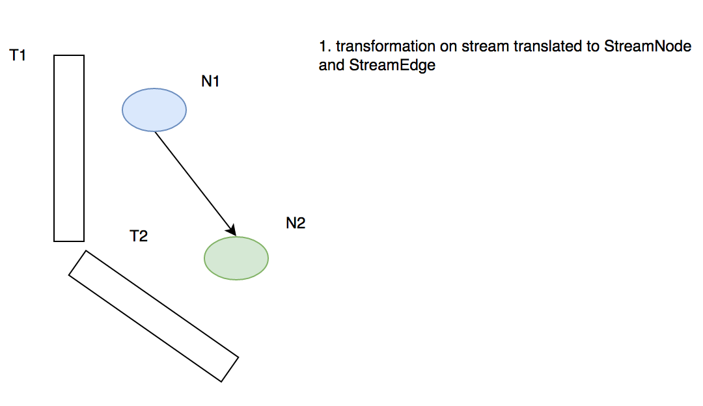

概要和背景
flink是一个被誉为 the 4th G 的计算框架，不同的框架特性及其代表项目列表如下：
| 第一代 | 第二代 | 第三代 | 第四代 |
|---|---|---|---|
| Batch | Batch Interactive | Batch Interactive Near-Real-Time Interative-processing | Hybrid Interactive Real-Time-Streaming Native-Iterative-processing |
| DAG Dataflows | RDD | Cyclic Dataflows | |
| Hadoop MapReduce | TEZ | Spark | Flink |
本文主要介绍flink的核心组件以及逻辑计划的生成过程
参考代码分支 flink-1.1.2
核心组件介绍
这里只介绍 on yarn 模式下的组件
flink 的 on yarn 模式支持两种不同的类型：
- 单作业单集群
- 多作业单集群
首先介绍 单作业单集群 的架构，单作业单集群下一个正常的 flink 程序会拥有以下组件
job Cli: 非 detatched 模式下的客户端进程，用以获取 yarn Application Master 的运行状态并将日志输出到终端
JobManager[JM]: 负责作业的运行时计划 ExecutionGraph 的生成、物理计划生成和作业调度
TaskManager[TM]: 负责被分发 task 的执行、心跳/状态上报、资源管理
整体的架构大致如下图所示：

下面以一次 Job 的提交过程描述 flink 各组件的作用及协同
作业提交流程分析
单作业单集群模式下，一个作业会启动一个 JM，并依据用户的参数传递启动相应数量的 TM，每个 TM 运行在 yarn 的一个 container 中，
一个通常的 flink on yarn 提交命令：./bin/flink run -m yarn-cluster -yn 2 -j flink-demo-1.0.0-with-dependencies.jar —ytm 1024 -yst 4 -yjm 1024 —yarnname flink_demo_waimai_e
flink 在收到这样一条命令后首先会通过 Cli 获取 flink 的配置，并解析命令行参数。
配置加载
CliFrontend.java 是 flink 提交作业的入口
|
|
这里会尝试加载 conf 文件夹下的所有 yaml 文件，配置文件的命名并没有强制限制
参数解析
解析命令行参数的第一步是路由用户的命令，然后交由run方法去处理
|
|
接下来是程序参数设置过程，flink 将 jar包路径和参数配置封装成了 PackagedProgram
|
|
flink集群的构建
集群类型的解析
获取参数后下一步就是集群的构建和部署，flink 通过 两个不同的 CustomCommandLine 来实现不同集群模式的解析，分别是 FlinkYarnSessionCli和 DefaultCLI 【吐槽一下 flink 类名的命名规范】解析命令行参数
|
|
那么什么时候解析成 Yarn Cluster 什么时候解析成 Standalone 呢？由于FlinkYarnSessionCli被优先添加到customCommandLine,所以会先触发下面这段逻辑
|
|
从上面可以看出如果用户传入了 -m参数或者application id或者配置了yarn properties 文件，则启动yarn cluster模式，否则是Standalone模式的集群
集群部署
flink通过YarnClusterDescriptor来描述yarn集群的部署配置，具体对应的配置文件为flink-conf.yaml，通过下面这段逻辑触发集群部署：
|
|
大致列下过程：
- check yarn 集群队列资源是否满足请求
- 设置 AM Context、启动命令、submission context
- 如果开启高可用模式【通过反射调用 submission context 的两个方法修改属性】 keepContainersMethod attemptFailuresValidityIntervalMethod 【和 Hadoop 的版本有关】第一个属性表示应用重试时是否保留 AM container，第二个属性表示 指定 间隔时间之内应用允许失败重启的次数
- 上传 用户 jar、flink-conf.yaml、lib 目录下所有的 jar 包、logback log4j配置文件 到 HDFS
- 通过 yarn client submit am context
- 将yarn client 及相关配置封装成 YarnClusterClient 返回
真正在 AM 中运行的主类是 YarnApplicationMasterRunner，它的 run方法做了如下工作：
- 启动JobManager ActorSystem
- 启动 flink ui
- 启动
YarnFlinkResourceManager来负责与yarn的ResourceManager交互，管理yarn资源 - 启动 actor System supervise 进程
到这里 JobManager 已经启动起来，那么 TaskManager是什么时候起动的呢？
在 YarnFlinkResourceManager启动的时候会预先执行一段逻辑【Akka actor的 preStart 方法】：
|
|
这段逻辑会先尝试获取 JobManager 的地址并给自己发送一个路由消息NewLeaderAvailable，然后YarnFlinkResourceManager会把自己注册到 JobManager 中，接着JobManager会发送一个回调命令：
|
|
接着会触发这样一段逻辑：
|
|
将所有的 TS 起动起来，这样一个 flink 集群便构建出来了。下面附图解释下这个流程：

- flink cli 解析本地环境配置，启动
ApplicationMaster - 在
ApplicationMaster中启动JobManager - 在
ApplicationMaster中启动YarnFlinkResourceManager YarnFlinkResourceManager给JobManager发送注册信息YarnFlinkResourceManager注册成功后，JobManager给YarnFlinkResourceManager发送注册成功信息YarnFlinkResourceManage知道自己注册成功后像ResourceManager申请和TaskManager数量对等的 container- 在container中启动
TaskManager TaskManager将自己注册到JobManager中
接下来便是程序的提交和运行
程序在CliFrontend中被提交后，会触发这样一段逻辑
|
|
注意到有一段prog.invokeInteractiveModeForExecution()，这是客户端生成初步逻辑计划的核心逻辑，下面将详细介绍
客户端逻辑计划
上面提到prog.invokeInteractiveModeForExecution()这段逻辑会触发客户端逻辑计划的生成，那么是怎样一个过程呢？其实这里只是调用了用户jar包的主函数，真正的触发生成过程由用户代码的执行来完成。例如用户写了这样一段 flink 代码：
|
|
注意到这样一段val env = StreamExecutionEnvironment.getExecutionEnvironment，这段代码会获取客户端的环境配置，它首先会转到这样一段逻辑：
|
|
ExecutionEnvironment.getExecutionEnvironment();获取环境的逻辑如下：
|
|
这里的contextEnvironmentFactory是一个静态成员，早在ContextEnvironment.setAsContext(factory)已经触发过初始化了，其中包含了如下的环境信息:
|
|
其中的 client 就是上面生成的 YarnClusterClient，其它的意思较明显，就不多做解释了。
用户在执行val env = StreamExecutionEnvironment.getExecutionEnvironment这样一段逻辑后会得到一个StreamContextEnvironment，其中封装了 streaming 的一些执行配置 【buffer time out等】，另外保存了上面提到的 ContextEnvironment 的引用。
到这里关于 streaming 需要的执行环境信息已经设置完成。
初步逻辑计划 StreamGraph 的生成
接下来用户代码执行到val stream = env.addSource(new FlinkKafkaConsumer08，这段逻辑实际会生成一个DataStream抽象，DataStream是flink关于streaming抽象的最核心抽象，后续所有的算子转换都会在DataStream上来完成，上面的addSource操作会触发下面这段逻辑:
|
|
简要总结下上面的逻辑：
- 获取数据源 source 的 output 信息 TypeInformation
- 生成 StreamSource sourceOperator
- 生成 DataStreamSource【封装了 sourceOperator】，并返回
- 将 StreamTransformation 添加到算子列表 transformations 中【只有 转换 transform 操作才会添加算子，其它都只是暂时做了 transformation 的叠加封装】
- 后续会在 DataStream 上做操作
该输出DataStreamSource继承自SingleOutputStreamOperator具体的继承关系如下：

而生成的 StreamSource operator 走的是另一套继承接口：

DataStreamSource 是一个 DataStream 数据流抽象，StreamSource 是一个 StreamOperator 算子抽象，在 flink 中一个 DataStream 封装了一次数据流转换，一个 StreamOperator 封装了一个函数接口，比如 map、reduce、keyBy等。关于算子的介绍会另起一节：flink算子的生命周期
可以看到在 DataStream 上可以进行一系列的操作(map filter 等)，来看一个常规操作比如 map 会发生什么：
|
|
一个map操作会触发一次 transform，那么transform做了什么工作呢？
|
|
transform() 生成了一个 StreamTransformation并以此作为成员变量封装成另一个 DataStream 返回，StreamTransformation是 flink关于数据流转换的核心抽象，只有需要 transform 的流才会生成新的DataStream 算子，后面会详细解释，注意上面有这一行getExecutionEnvironment().addOperator(resultTransform)flink会将transformation维护起来：
|
|
所以，用户的一连串操作 map join 等实际上在 DataStream 上做了转换，并且flink将这些 StreamTransformation 维护起来，一直到最后，用户执行 env.execute()这样一段逻辑，StreamGraph 的构建才算真正开始…
用户在执行env.execute()会触发这样一段逻辑：
|
|
这段代码做了两件事情：
- 首先使用
StreamGraphGenerator产生 StreamGraph - 使用 Client 运行 stream graph
那么StreamGraphGenerator 做了哪些操作呢？
StreamGraphGenerator会依据添加算子时保存的 transformations 信息生成 job graph 中的节点，并创建节点连接，分流操作 如 union,select,split 不会添加边，只会创建虚拟节点或在上有节点添加 selector
这里会将 StreamTransformation 转换为 StreamNode，StreamNode 保存了算子的信息【会另外介绍】，如下图所示

到这里由 StreamNode 构成的 DAG 图 StreamGraph就生成了
不过 在提交给 client 的时候，flink 会做进一步的优化:
StreamGraph 将进一步转换为 JobGraph，这一步工作由 StreamingJobGraphGenerator 来完成，为什么要做这一步转换呢？主要因为有可以 chain 的算子，这里进一步将 StreamNode 转换为 JobVertex，主要工作是将可以 chain 的算子合并【这一步优化是默认打开的】，并设置资源，重试策略等，最终生成可以提交给 JobManager 的 JobGraph
优化的逻辑计划 JobGraph 的生成
|
|
上面的方法是算子 chain 的核心操作，简要概括下：
- 如果从此 start node 开始未生成过 JobVertex，则执行 chain逻辑，由于是递归操作，会先深度优先遍历，将源节点开始到第一个不可 chain 的 StreamNode 之间的算子做 chain 操作【先算叶子节点的 chain，依次往根节点计算】
- line 207 遇到不可 chain 的边，开始深度遍历生成 JobVertex
- line 216 将 StreamNode 的输入输出配置，包括序列化配置等设置到上面的 StreamingConfig 中，并在 vertexConfigs 中保存起来，如果是 新生成的 JobVertex，起对应的 StreamingConfig 会以 start node id 为 key 进行保存
- transitiveOutEdges 保存的该节点下游所有的 non chain_able edges，最终的方法会返回此数据结构
- 连接 start node 和所有的 transitiveOutEdges 【在输入 JobVertex 创建 IntermediateDataSet，partition类型为 pipeline，生成 JobEdge】
- 如果是新生成JobVertex，继续设置config，包括 chain start，所有物理输出，及直接逻辑输出、chained config等
- 如果不是新生成 JobVertex，直接chain configs
这里总结下JobGraph的构建过程，见下图:

大致过程总结如下：
- 由
DataStream上的操作生成StreamTransformation列表 - 从
StreamTransformation的生成关系创建StreamNode和StreamEdge - 做算子chain，合并成
JobVertex，并生成JobEdge
一个 JobVertex 代表一个逻辑计划的节点，就是 DAG 图上的顶点，有点类似于 Storm 的 bolt 或 spout，生成一个 JobVertex 的逻辑如下：
|
|
这里有两段逻辑值得注意，第一是数据源节点的判断，第二是运行时执行类 InvokableClass 的设置
streamNode.getInputFormat()是判断是否是数据源节点的逻辑，如果是数据源节点，这里会将用户代码【这里为 InputFormat.class 的子类】设置进 JobVertex 的配置中，并在 JobManager 执行提交作业命令的时候做初始化，会在 Flink 物理计划生成一节介绍。
jobVertex.setInvokableClass是设置运行时的执行类，通过这个类再调用用户定义的 operator，是 flink task 中真正被执行的类，具体会在 flink-task-runtime 一节中详细介绍。
至此 JobGraph 生成，并扔给 JobManager 执行😝